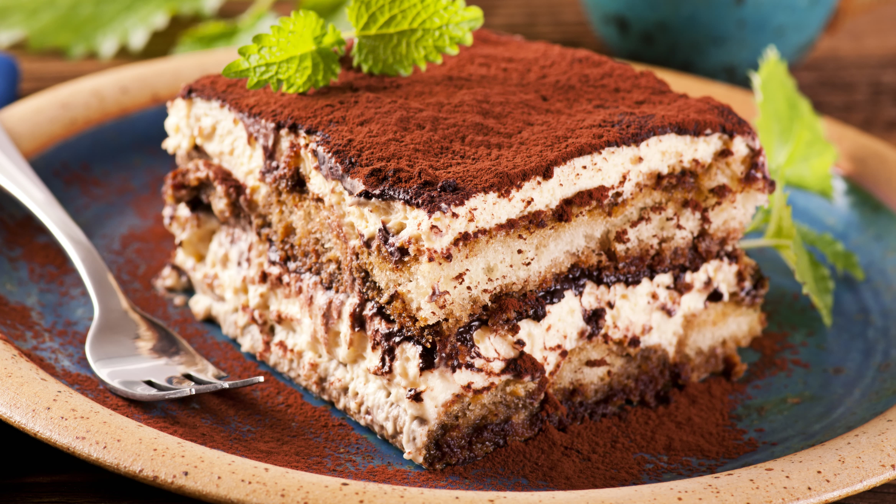
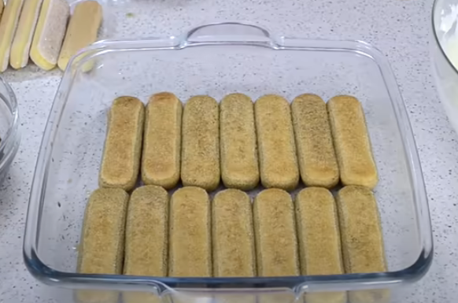

Tiramisu

Image from bfmtv.com
Description
Tiramisu is an Italian dessert made of ladyfinger pastries (savoiardi) dipped in coffee, layered with a whipped mixture of egg yolks, sugar, and mascarpone, and topped with cocoa powder.
The recipe has been adapted into many varieties of cakes and other desserts. It's origin is disputed between the Italian regions of Veneto and Friuli-Venezia Giulia. The name comes from the Italian tirami su ('pick me up' or 'cheer me up').
Ingredients
- 500 g mascarpone cheese
- 500 ml sweetened coffee
- 400 g ladyfingers
- 8 tablespoons of sugar
- 5 eggs (separate the yolks from the egg whites)
- 3 tablespoons of cocoa powder
- 1 teaspoon of vanilla extract
- a little bit of salt
Steps
Preparing the cream
- In a medium sized bowl, add the egg whites with the salt and whip the eggs using hand blender, until you get a foamy mixture.
- Add half of your sugar(4 tablespoons) and continue mixing it until you get shiny stiff peaks (a marshmellow like texture).
- In a separate medium sized bowl, add your egg yolks along with the rest of the sugar and the vanilla extract. Now whip the eggs until they get whiter and get a creamy texture.
- Add the mascarpone (at room temperature) and slowly incorporate it (at first, so it doesn't splatter everywhere) into the mixture.
- Take a spatula and carefully integrate the whipped eggs into the cream (use wide strokes, being careful not to squeeze the air out of the whipped eggs too much).
Assembling the cake
- Have a 20x20cm tray ready. Dip each ladyfinger into the sweetened coffee for about 3 seconds, and place them like so:

- Pour in half of your cream over the ladyfingers. Level it, then cover it with cocoa powder until your heart gives in (optional).
- Prepare the next round of ladyfingers (should be the remaining half) and repeat steps 6, 7.
- Almost done! Leave the cake in the fridge for at least a few hours, preferrably overnight. This allows the cake to fully absorb the flavour.
We're done! Congratulations on making this incredibly delicious Italian treat. For more recipes, click below to return to the home page: